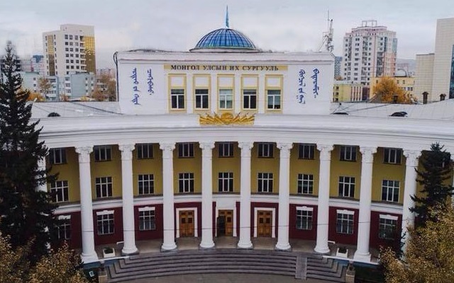

1 (Текст сүүдэрлэлт) “New features in CSS3” гэсэн текстэнд паттернтээ офсет нь 2px, босоо офсет
нь 5px, blur radius нь 5px, сүүдрийн өнгө нь deepskyblue байх сүүдэр үүсгэ.
New features in CSS3
2.(Дугуй булан) Тус бүр нь 200px-ийн өргөн өндөртэй, өөр өөр дэвсгэр өнгөтэйгөөр 3 div элемент
үүсгэ. Эхний элементэд 3px-ийн хар хүрээ үүсгээд бүх буланг нь 10px хэмжээгээр бага зэрэг
дугуйруул. Хоёр дахь элементэд 3px-ийн хар хүрээ үүсгээд бүх буланг нь 50px хэмжээгээр
дугуйруул. Сүүлийн элементэд мөн 3px-ийн хар хүрээ үүсгээд бүх буланг нь 100px хэмжээгээр
дугуйруул. Элемент бүрийн дотор border-radius хэмжээг тод текстээр гарга.
3.(Хайрцаг сүүдэрлэлт) Тус бүр нь 200px-ийн өргөн өндөртэй, өөр өөр дэвсгэр өнгөтэйгөөр 3 div
элемент үүсгэ. Эхний элементэд паттернтээ офсет нь 15px, босоо офсет нь 15px, blur radius нь
20px, сүүдрийн өнгө нь dimgrey байх сүүдэр үүсгэ. Хоёр дахь элементэд паттернтээ офсет нь
-15px, босоо офсет нь -15px, blur radius нь 30px, сүүдрийн өнгө нь dimgrey байх сүүдэр үүсгэ.
Харин сүүлийн элементэд паттернтээ офсет нь 15px, босоо офсет нь 15px, blur radius нь 10px,
сүүдрийн өнгө нь dimgrey байх сүүдэр үүсгэ.
4.(Шугаман градиент) 500px-ийн өргөн өндөртэй div элемент үүсгэ. Red, Orange, Yellow, Green,
Blue, Indigo, Violet гэсэн солонгын өнгүүдийг багтаасан диагноль градиент үүсгэ.
5.(Цацраг градиент) 500px-ийн өргөн өндөртэй div элемент үүсгэ. Уг элементэд зүүн доод
булангаас эхлэлтэй 3 өөр өнгө уусгасан цацраг градиент үүсгэ.
6.(Анимейшн) Элементийг тэгш өнцөг үүсгэн хязгааргүй удаа давтагдан хөдлөх анимейшн үүсгэ.
7.(Skew) Доорх жишээн дээрх элементийг эхлээд дээрээс доош 30deg, дараа нь зүүнээс баруун
тийш 30deg хөдөлж байх, хязгааргүй удаа alternate утгатай анимейшн болгон өөрчил.
8.(Зураг хоорондын шилжилт) Доорх жишээг 5 зураг солигддог байхаар өөрчил. Ингэхдээ
transition-duration шинж чанарт 3s, transition-timing-function шинж чанарт linear утгуудыг тус тус олго.


11.(Transformation) 4 зураг үүсгээд хулгана очих үед тухайн зургийн хэмжээг 20 хувиар
нэмэгдүүлдэг transform бич.
9.(Олон баганатай текст) Текстийг 2 баганатай болгон гарга. Багана тусгаарласан шугамуудын
өргөнийг 5px, өнгийг цэнхэр болго.
Amouage Epic эмэгтэй сүрчиг
Саявтархан нэг найзтайгаа Amouage-ийн үнэртэний чамин ганган бортого, хайрцагтайг ярилцаж суух зуур найз маань Epic эмэгтэй сүрчигний хайрцаг дээрх Хятад ханз бичиг таалагддаггүй тухай цухас дурдаад, би ч тэр үедээ нээх ойшоохгүй өнгөрсөн. Гэтэл өнөөдөр нээрээ яагаад Хятад ханз байдаг юм болоо гээд сониучархан интернэт ухтал энэ сүрчгийг Алс Дорнод Хятадыг холбосон Торгоны зам, Хятадын эртний Хориотой хот, Драгон хаан, түүний зуны ордонтой холбож, Ж.Пуччиний “Турандот” дууриас сэдэвлэн бүтээсэн юм байна гэж ойлголоо. Харин Epic-ийн хайрцаг дээрх бичээсийг охины найз “Эртний яруу найраг, туульс” гэж бичсэн юм шиг байна гэсэн, Хятад хэл мэддэг найзууд уншаад яг юу гэж байгааг тодорхой бичнэ биз.
Турандот дуурийн талаар
Жүжгийн үйл явдал дорно дахины үлгэрийн хот Бээжинд болно. Хятадын хааны гүнж Турандот сайн эрсийн дунд гурван таавар таалгах бөгөөд тааврыг нь эс таасан хэн боловч толгойгүй болох аж. Персийн хаан хүү эл харгис явдлын золиос болж толгойгоо авахуулах үест хаан эцэгтэйгээ уулзахаар ирсэн Монголын хан хүү Калаф уг тааврыг таахаар зориглон очно. Калаф ханхүүгийн энэ зоримог алхмыг түүний эцэг Төмөр хаан, ордны сайд, түшмэд болон мөн зарц бүсгүй Лю нар хичнээн хоригловч ханхүү зорьсондоо заавал хүрнэ хэмээн андгайлна. Хятадын хааны ордны өмнө хүмүүс цугларч үл таних ханхүүг эндээс бушуу явахыг шаардана. Тийн байтал Хятадын хаан, шадар сайдуудын хамт ирж, охин Турандотдоо таавраа таалга гэж айлдана. Турандот ханхүүг хараад "Би энэ ертөнцийн эр хүн бүхнийг үзэн яддаг. Намайг балчир байхад яг чам шиг царай зүстэй хүмүүс биднийг дайлаар ирж, эзэлж дээрэмдээд нүдний минь өмнө эмэг эх, ээж хоёрыг минь алсан тэр мөчөөс хойш би эр хүн бүхнийг үзэн ядаж тэднээс өшөөгөө авдаг болсон" гэж хэлээд гурван таавраа хэлнэ. Ордонд Монголын ханхүү нэр нь үл мэдэгдэх нэгэн. Тэрбээр эхнийх нь "найдвар", хоёр дахь нь "зүрхний цус", гурав дахь нь "хайр дурлал" хэмээн тааврын хариуг үнэн зөв хариулна. Ингээд ханхүү Турандот гүнжид хандан "Та гурван таавраа миний амьтай дүйж таалгасан. Одоо би нэг таавар таалгая.
Хэрвээ тааврыг тайлж чадвал таны санаснаар болог, эс тайлбал та минийх болно" гээд "Миний нэр хэн бэ, хаанахын хүн бэ?" хэмээн асууж хариуг хүлээнэ. Хятадын хааны ордныхон шөнөжингөө сандран ханхүүгийн асуултын хариуг эрсэн боловч ханхүүг хаанахын хэн бэ гэдгийг олж мэдэж чадсангүй. Үүр цайж Турандот гүнж Калафын тааврын хариуг хэлэх цаг болно. Гүнж албатууддаа зарлиг буулгаж Төмөр хааны зарц Лю бүсгүйг авчран байцаах боловч тэр Монголын хан хүүд хайртай гэдгээ хэлээд түүнийхээ нэрийг хэнд ч хэлэхгүй хэмээн өөрийгөө хорооно. Монголын хан хүү Калаф хайр дурлалын дуу дуулан Турандот гүнжийн хүйтэн цэвдэг сэтгэлийг уяруулан, уй гашуу, харгис аллагын өмнө хүчин мөхөсдөн байсан олон түмэнд итгэл найдварыг нь эргүүлэн авчрахад хуран цугласан олон түүнийг ерөөн алдаршуулан дуулж дуурь төгсөнө. Монголын ханхүүд зориулан дуулах тэр дуунд "Мөнхийн амьдрал, их хайрын хүч, амьдралын баяр баясгалан. Бид чамайг алдаршуулъя" гэж дуулсан байдаг.
Ж. Пуччини 1919 оноос эхлэн “Турандот гүнж”дууриа шуурхайлан бчисэн боловч дуусгаж баралгүй нас барсан тул төгсгөлийн хэсгийг тууний шавь Ф.Альфано нь 1926 онд гүйцээжээ. Энэ дуурийг зохиогч нь нас барснаас хойш хоёр жилийн дараа 1926 онд анх Миланы театрт тавьсан. Анх тавихад нь домогт удирдаач Артуро Тосканини удирдан тоглуулсан бөгөөд тоглолтын сүүл хэрд зогсч үзэгчдэд хандан "Яг энд үхэл агуу их хүнээс үзгийг нь булаасан юм" хэмээгээд хэдэн хором чимээгүй зогсч Пуччинид хүндэтгэл үзүүлсэн гэдэг. Үүнээс хойш дэлхийн аль ч театрт "Турандот"-ыг удирдан тоглуулсан ямар ч удирдаач дээрх жишгийг дагадаг уламжлал тогтсон гэдэг. Европын сонгодог дуурьт монгол баатар байдгийг хүмүүс тэр бүр мэддэггүй байж болох юм.
Турандот гүнж бодит түүхэн хүн болох тухай
Монголын эзэнт гүрний Хайду хааны охин, Чингис хааны тав дахь үеийн удам угсааны Хутулан буюу “Хотол цагаан” гүнж гоо үзэсгэлэнтэйгээс гадна биерхүү, хүч чадалтай нэгэн байсан тул эрийн гурван наадмын төрөл болох бөх, хурдан морь, нум сум харвах тэмцээнд хүч бяраа үздэг байж. Энэ ч утгаараа “Хотол цагаан гүнжийн домог” хэмээх эрт цагийн нэгэн бодит явдал түүхийн шарласан хуудаснаа дурайтал үлдсэн байдаг. Хутулан гүнж нэг эхээс цувж төрсөн арав гаруй ахтай байсан бөгөөд тэрбээр хүдэр чийрэг ах нартайгаа ноцолдон өсч, тэднийг хүч бяраар дийлэхийн тулд багаасаа л тэдэнтэй өрсөлдсөөр иржээ. Тэгээд нас биед хүрмэгцээ наадам тэмцээнд оролцож, мөн эцэг Хайду хааныхаа цэргүүдийг удирдан тулаанд орж хэд хэдэн удаа ялалт байгуулсанаар Монголын овог, аймгуудын дунд нэр нь цуурайтах болсон байна. Олон арван баатар эр түүнтэй амьдралаа холбохыг санаархаж байсан ч Хутулан гүнж “Надтай барилдаад намайг давсан хүнтэй л би сууна” гэж ам гарчээ. Гэвч түүнийг давах эр гарч ирсэнгүй. Хайду хааны хувьд Хутулан гүнж хамгийн хайртай хүүхэд нь байжээ. Энэ үүднээс Хутулан гүнжид атаархагчид “Бөх гүнж хаан эцэгтэйгээ эр эмийн ажил хийдэг” гэсэн цуу дэгдээсэн байна. Тиймээс Хутулан гүнж хаан эцгийнхээ нэр төрийг сэвтээхгүйн тулд баатар эрсийн дундаас хамгийн итгэлтэй сайныг нь сонгож гэрлэсэн түүхтэй. Түүний эцэг Хайду хаан Хятадын соёл бүхий тансаг амьдралыг илүүд үзсэн Хубилай хааны бодлоготой төдийлөн санал нийлдэггүй байсан бөгөөд Хутулан гүнж ч эцгийнхээ үзэл бодлын дагуу суурин амьдралыг ойшоодоггүй байж. Хубилай хааны дэргэд олон жил суусан Италийн жуулчин Марко Поло болон Ираны түүхчид Хутулан гүнжийн талаар дээрхи сурвалж бичгийг үлдээсэнээр 18-р зууны үеэс Европт Азийн нэгэн энгүй хүчтэй бөх гүнжийн тухай яриа дэгдсэн байна. Тиймээс Францын эрдэмтэн зохиолч Франсуа Питис де Ла Крой Хутулан гүнжийн тухай зохиол бичиж, үүндээ түүнийг Алтан хааны 19 настай Турандот хэмээх турк охины дүрээр дүрсэлсэн байдаг. Уг зохиолд Хутулун гүнжийн бөх барилдаж даваад эр нөхрөө сонгох хүсэлтийг гурван янзын оньсого болгож өөрчилжээ. Хутулан гүнжид унасан бөхчүүд мөрийнд тавьсан адуугаа алддаг байсан бол жүжгийн зохиолд Турандоттой суухыг хүссэн эрчүүд гурван оньсогыг тааж чадахгүй бол амиа өгдөг. Уг зохиол мэндэлсэнээс хойш 100 гаруй жилийн дараа Италийн хөгжмийн зохиолч Ж.Пуччини Азийн гүнж гэгддэг “Турандот” хэмээх алдарт дууриа туурвижээ. Гэхдээ уг дуурийн гол дүр Турандот нь эрт цагийн Хутулан гүнж шиг хүч чадалтай, баатарлаг эмэгтэй бус өөрөөсөө дорд гаралтай эр хүнтэй суухаас татгалзаад хайртай хүнээ насан туршдаа хайж яваа бардам эмэгтэйгээр дүрсэлсэн байдаг.
12. (Media Queries) 4 баганатай вэб хуудас бүтээгээд түүнийг 480px-ээс доош өргөнтэй гар утсан
дээр үзэхэд 1 баганатай болгох media queries ашигла.
10. (FML) Flexbox model layout ашиглан дараах дүрсүүдийг үүсгэн зэрэгцүүл
sss
111111111111<>
222222222222
333333333333